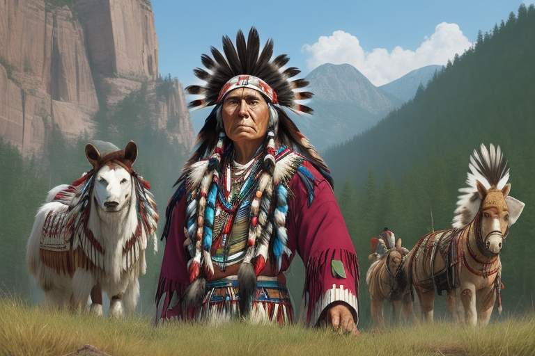

Tribal sovereigntyTribal sovereignty definitionTribal sovereignty refers to the right of American Indians and Alaska Natives to govern themselves. The U.S. Constitution recognizes Indian tribes as distinct governments and they have, with a few exceptions, the same powers as state governments to regulate their internal affairs. Cases and laws involved in Tribal sovereigntyLand transfers from Native Americans to private individuals are void. When a land has been acquired through conquest, the people who have been lving on that land have a right to live on the land but cannot transfer title to the land. the Cherokee Nation sought an order to stop what the State of Georgia was doing from the U.S. Supreme Court.which was taking away rights of Cherokees residing within the state, including Cherokee removal from land that the state wanted .The supreme court dismissed their bill of complaints. The Supreme Court said they lacked jurisdiction to hear the case, and that an “Indian Nation” is not a “Foreign Nation” for jurisdiction under the Constitution, but instead a “domestic dependent nation.”. In Short the supreme court deemed they could't hear the case becuase of legality and would under Georgia law, until the following case happened This case involved the application of Georgia state law within the Cherokee Nation. The decision was made that tribes do not lose their powers by becoming subject to the power of the United States. It also maintained that only Congress has overriding power over Indian affairs and that state laws do not apply in Indian Country. Over the years, several acts of Congress have modified the nation-to-nation relationship between the federal government and Indian tribes: In 1953, Congress gave six states — Alaska, California, Minnesota, Nebraska, Oregon and Wisconsin — criminal jurisdiction over tribal members and other people on reservations. A federal law that seeks to keep Indian children with Indian families.It established minimum Federal standards for the removal of Indian children and provides guidelines for the placement of Indian children in foster or adoptive homes which reflect the unique values of Indian culture. It was passed in 1978 in response to compelling evidence of the high number of Indian children that were being removed from their families by public and private agencies and placed in non-Indian families. The argument was that Child Welfare agencies were often ignorant, indifferent of or insensitive to cultural differences in child rearing and parenting practices and, as a result, many unnecessary, and unwarranted, foster and adoptive placements were made. The 1988 Indian Gaming Regulatory Act (IGRA) requires that, should a tribe decide to participate in casino gaming, the state can negotiate in good faith with the tribe to develop a gaming compact setting forth games, limits and other terms. This act covers Indian tribes under some of the bill of rights such as,protects freedom of religion and speech, prohibits double jeopardy, and prevents defendants in criminal cases from self-incrimination, among other provisions. It also allows federal courts the ability to intervene in intra-tribal disputes to enforce the law. Much of the statute's provisions involve tribal lands, such as sections indefinitely extending the trust status of American Indian lands, the creation of a program for the Secretary of the Interior that allowed them to purchase land that benifted native americans as well as estiblish new resevations. It also encourages Indian tribes to to follow the federal three-branch system Overall,The Constitution gives authority in Indian affairs to the federal government. it also deals with Indian tribes as governments. Some states have explicitly recognized the governmental status of Indian tribes through various state recognition processes.  |